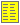
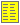
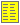

Page 7 : 24
SVG Development Notes
En Per Illustration
A while flow graph
Animation testing
Animation testing - Keyboard Events
More Animation Testing
Page 1
Location test page
Page 3
Page 4
Page 5
Page 5 - Animated
Page 6
Page 7 - Arrays
ASCII Tabel
Composite Nodes
Class Illustrations
Cons Cells
Animated Cons Cells
List Insertion
List deletion
Tree Page
Tree Page - traversal
Tree Page - Subset selection
Tree Page - traversal with edge motion
Location test page
To see this image you must download and install the
SVG plugin from Adobe
.In Firefox please consult
this page.
Test of locations on svg-nodes


 
